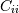

numpy.random.multivariate_normal¶
- numpy.random.multivariate_normal(mean, cov[, size])¶
Draw random samples from a multivariate normal distribution.
The multivariate normal, multinormal or Gaussian distribution is a generalization of the one-dimensional normal distribution to higher dimensions. Such a distribution is specified by its mean and covariance matrix. These parameters are analogous to the mean (average or “center”) and variance (standard deviation, or “width,” squared) of the one-dimensional normal distribution.
Parameters : mean : 1-D array_like, of length N
Mean of the N-dimensional distribution.
cov : 2-D array_like, of shape (N, N)
Covariance matrix of the distribution. Must be symmetric and positive semi-definite for “physically meaningful” results.
size : int or tuple of ints, optional
Given a shape of, for example, (m,n,k), m*n*k samples are generated, and packed in an m-by-n-by-k arrangement. Because each sample is N-dimensional, the output shape is (m,n,k,N). If no shape is specified, a single (N-D) sample is returned.
Returns : out : ndarray
The drawn samples, of shape size, if that was provided. If not, the shape is (N,).
In other words, each entry out[i,j,...,:] is an N-dimensional value drawn from the distribution.
Notes
The mean is a coordinate in N-dimensional space, which represents the location where samples are most likely to be generated. This is analogous to the peak of the bell curve for the one-dimensional or univariate normal distribution.
Covariance indicates the level to which two variables vary together. From the multivariate normal distribution, we draw N-dimensional samples, . The covariance matrix element is the covariance of and . The element  is the variance of (i.e. its “spread”).
Instead of specifying the full covariance matrix, popular approximations include:
- Spherical covariance (cov is a multiple of the identity matrix)
- Diagonal covariance (cov has non-negative elements, and only on the diagonal)
This geometrical property can be seen in two dimensions by plotting generated data-points:
>>> mean = [0,0] >>> cov = [[1,0],[0,100]] # diagonal covariance, points lie on x or y-axis
>>> import matplotlib.pyplot as plt >>> x,y = np.random.multivariate_normal(mean,cov,5000).T >>> plt.plot(x,y,'x'); plt.axis('equal'); plt.show()
Note that the covariance matrix must be non-negative definite.
References
Papoulis, A., Probability, Random Variables, and Stochastic Processes, 3rd ed., New York: McGraw-Hill, 1991.
Duda, R. O., Hart, P. E., and Stork, D. G., Pattern Classification, 2nd ed., New York: Wiley, 2001.
Examples
>>> mean = (1,2) >>> cov = [[1,0],[1,0]] >>> x = np.random.multivariate_normal(mean,cov,(3,3)) >>> x.shape (3, 3, 2)
The following is probably true, given that 0.6 is roughly twice the standard deviation:
>>> print list( (x[0,0,:] - mean) < 0.6 ) [True, True]